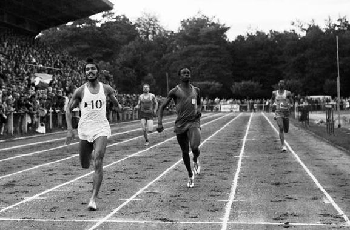
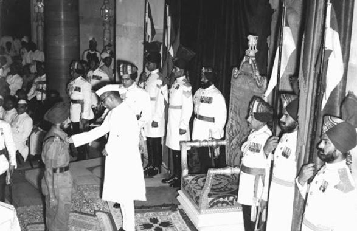
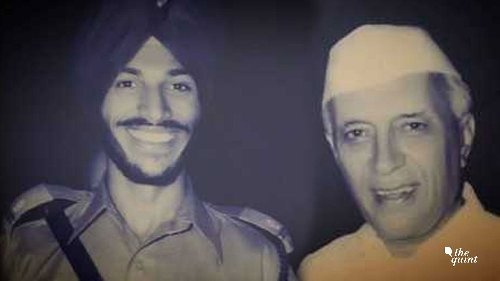
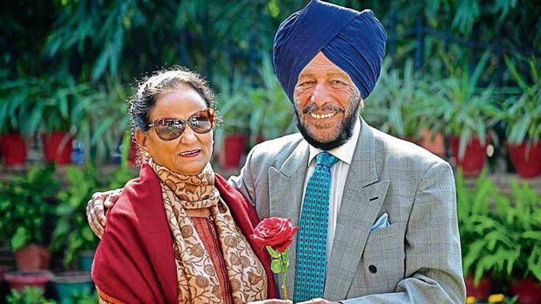

Bhaag Milkha Bhaag...
The Flying Sikh

From left, Milkha Singh running.
From left, Milkha Singh running.
20th Nov 1929:
Milkha Singh was born in a Sikh family of Rathore Rajput origin.[5] His birthplace was Govindpura,[6] a village 10 kilometres (6.2 mi) from Muzaffargarh city in Punjab Province, British India (now Muzaffargarh District, Pakistan).
1947:
Escaping the troubles in Punjab, where killings of Hindus and Sikhs were continuing,[7] by moving to Delhi, India, in 1947, Singh lived for a short time with the family of his married sister and was briefly imprisoned at Tihar jail for travelling.
1951:
Singh became disenchanted with his life and considered becoming a dacoit but was instead persuaded by one of his brothers, Malkhan, to attempt recruitment to the Indian Army. He successfully gained entrance on his fourth attempt and while stationed at the Electrical Mechanical Engineering Centre in Secunderabad he was introduced to athletics.
1956:
Singh represented India in the 200m and 400m competitions of the Melbourne Olympic Games.
A picture of running Milkha Singh (on the extreme right) in the 1958 Asian Games.
Picture of Singh being awarded Padma Shri from then Prime Minister Pandit Jawaharlal Nehru.
A picture of Pandit Jawaharlal Nehru and a young Milkha Singh
1960:
Singh was persuaded by Jawaharlal Nehru to set aside his memories of the Partition era to race successfully, against Abdul Khaliq in Pakistan, where a post-race comment by the then General Ayub Khan led to him acquiring the nickname of The Flying Sikh.
1962:
At the Asian Games, held in Jakarta, Singh won gold in the 400m and in the 4 x 400m relay.
Married Nirmal Saini, a former captain of the Indian women's volleyball team.
Old newspaper cut-out of young milkha singh and wife Nirmal Saini newly wedded.
A picture of old Milkha Singh and his wife Nirmal Saini.
1964:
He attended the Olympic Games in Tokyo, where he was entered to compete in the 400m, the 4 x 100m relay and the 4 x 400m relay.
2012:
He donated the Adidas shoes that he had worn in the 1960 400m finalto be sold in a charity auction organised by actor Rahul Bose.
2013:
Singh and his daughter, Sonia Sanwalka, co-wrote his autobiography, titled The Race of My Life. The book inspired Bhaag Milkha Bhaag, a 2013 biographical film of Singh's life.
Real vs Reel: Milkha Singh on (the left) and actor Farhan Akhtar as Milkha Singh in the movie (on the right)
2017:
Singh's wax statue – created by sculptors of Madame Tussauds in London – was unveiled at Chandigarh. It depicts Singh in running posture during his victorious run at the 1958 Commonwealth Games.
Milkha singh posing beside his wax-statue.
2021:
On 24thMay, Singh was admitted to the intensive care unit at Fortis Hospital in Mohali with pneumonia caused by COVID-19. His condition was, for a while, described as stable, but he died on
| Medal Record | |||
|---|---|---|---|
| Sr.No | Medal | Event | Category |
| 1 |  Gold Gold |
1958 Asian Games | 200 m |
| 2 | Gold |
1958 Asian Games | 400 m |
| 3 | Gold |
1958 Commonwealth Games | 440 yards |
| 4 | Gold |
1962 Asian Games | 400 m |
| 5 | Gold |
1962 Asian Games | 4x400 m relay |
| 6 | Gold |
1958 Cuttack National Games | 200 m |
| 7 | Gold |
1958 Cuttack National Games | 400 m |
| 8 |  Silver Silver |
1964 Cuttack National Games | 400 m |